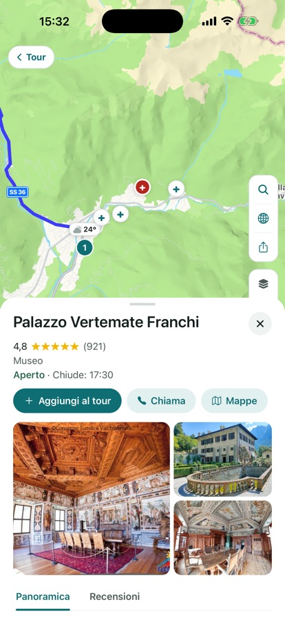

Tutte le funzioni di Motoseyir
Questa pagina cresce. Quando arriva una funzione nuova, viene aggiunta prima qui, sotto il titolo giusto. Qui sotto ci sono quattro gruppi: città e corrieri, viaggi, in strada e dopo il giro, andare in gruppo.
Per la città e per i corrieri
Percorso più corto
Un navigatore classico ti dà la strada più veloce per un’auto. In moto quello che ti stanca non sono i minuti, sono i chilometri. Motoseyir confronta più alternative tra gli stessi due punti e propone la più corta, anche se ci vuole un po’ più di tempo. Nella navigazione passo passo ci sono mappa che segue da vicino, indicazioni di svolta, distanza rimasta e ora di arrivo.

L’ordine migliore delle tappe
Segni più punti di consegna nell’ordine che vuoi e “Ordine migliore” li ridispone tutti sulla distanza totale più breve. Sopra il percorso è scritta anche l’ora in cui arriverai a ogni tappa. Le due schermate qui sotto vengono da un giro reale: le stesse quattro tappe a Istanbul, 57,1 km nell’ordine del motociclista, 46,9 km in quello trovato da Motoseyir. Più di dieci chilometri di differenza.


Costo del carburante
Il costo stimato del carburante lo vedi prima di partire, calcolato nell’unità del tuo paese: litri per 100 km in Europa, galloni e mpg negli Stati Uniti, con i prezzi locali. Consumo e prezzo li inserisci in Impostazioni → Guida; il report di risparmio si calcola da questi due valori.
Per i viaggi e i giri del fine settimana
Modalità Strade secondarie, Costa ed Enduro
In modalità Strade secondarie il percorso è calcolato sul server di Motoseyir, che usa i collegamenti di valle e le stradine asfaltate che una mappa normale salta. Da Ayder a Hemşin vengono così 24,1 km; le mappe generali per gli stessi due punti mostrano 49,9 km. La modalità Costa tiene il percorso lungo il litorale con lo stesso server, mentre la modalità Pista enduro cerca ghiaia e sterrato. La modalità la cambi con il pulsante in alto a sinistra nella schermata del tour.

Percorsi leggendari, pronti da guidare
Dalle Alpi: Großglockner Hochalpenstraße, Passo dello Stelvio, Furka–Grimsel–Susten, Sellaronda, Rombo, Col du Galibier. Dalla Turchia: Şile–Ağva, la D400 licia, Assos–monti Kaz, Nemrut, Sapanca–Maşukiye–Kartepe. E sette classici americani: Tail of the Dragon, Cherohala Skyway, Blue Ridge Parkway, Beartooth Highway, Angeles Crest, Big Sur, Million Dollar Highway. Quando ne apri uno, viene copiato nei tuoi tour con le sue tappe e il suo tracciato.

Esplora
L’app elenca calette, campeggi e posti per mangiare lungo il percorso. Guardi il voto e la distanza dal tuo tracciato e aggiungi come tappa quello che ti piace. Tocca un posto e posizione, voto e una breve descrizione stanno in una schermata.


Diario del tour
Il tour lo costruisci con le tappe; quando arrivi a una, quella tappa viene annotata da sola nel diario e tu aggiungi una foto e una nota breve. Una tappa può tenere fino a tre foto, e le foto compaiono come schede sulla mappa del tour. Restano anche se ricominci il tour da capo. Il diario resta sul dispositivo; se scegli di condividerlo nella Community partono al massimo tre foto, e scegli tu quali.

Piste e GPX
Importa un file GPX e la traccia finisce nella scheda Pista; un tour dal codice di un amico finisce nella scheda Tour. Finché la scheda Pista è vuota spiega a cosa serve e propone una pista di esempio per la tua regione. Puoi anche trasformare una tua registrazione in pista ed esportarla come GPX.
In strada e dopo il giro
Avviso pioggia sul percorso
Se sul percorso è prevista pioggia, l’app avvisa in anticipo per l’ora in cui ci arriverai davvero — tappa per tappa. Se il tempo è asciutto, non compare nulla.

Registrazione del giro e statistiche della pista
La registrazione continua anche a schermo spento e la traccia si colora in base alla velocità; il tempo di sosta è contato a parte e le pause lunghe chiudono un segmento da sole. In viaggio avvii la registrazione con il pulsante in navigazione e la chiudi con lo stesso pulsante. Un giro finito lo puoi mandare al gruppo, trasformare in pista o esportare come GPX. Per una pista l’app calcola distanza, dislivello totale e pendenza massima, e mentre scorri il dito sul profilo altimetrico il punto si muove sulla mappa. Se nel file non c’è la quota, viene calcolata da un modello del terreno.

Guida vocale
Le indicazioni di svolta le dice la voce del telefono nella lingua dell’app; con l’app in turco arrivano da una voce umana registrata — registrata di nuovo nell’ultimo aggiornamento. La distanza segue la tua regione: chilometri in Europa, miglia e piedi negli Stati Uniti (“tra 500 piedi svolta a destra”), miglia e yard nel Regno Unito.
Ruota il telefono
Col telefono in orizzontale schede ed elenchi si raccolgono a sinistra e la mappa prende il resto. In navigazione la striscia della manovra e la scheda dell’arrivo stanno a sinistra, la mappa a destra; I miei tour passa a due colonne. Nei supporti larghi sopra il serbatoio questo layout funziona meglio.
Andare in gruppo
Giro in gruppo
Quando qualcuno crea un gruppo nasce un unico codice (per esempio A3K9MZ7P); tutti entrano con quel codice e si vedono sul percorso. La posizione è condivisa solo mentre è in corso una registrazione o la navigazione, e a giro finito viene cancellata dal server. Entrare è gratis, creare un gruppo richiede Pro. Quando un membro apre un percorso con Parti, lo stesso percorso va agli altri, che lo aprono sul proprio schermo con un tocco.
Il pannello del gruppo nell’ultimo aggiornamento è più semplice: codice in alto, persone prima, impostazioni sotto. Il pulsante del gruppo mostra quando la condivisione è attiva, e una tappa aggiunta al percorso è segnata sulla mappa.

Invitare alla corsa
In Il mio gruppo, “Invita alla corsa” accanto a una persona manda il tuo percorso e un collegamento vocale con un tocco. Chi lo riceve sceglie “Fai lo stesso percorso” e apre lo stesso tracciato sul proprio telefono, oppure “Arrivo dietro di te” e si collega solo all’audio. Niente codici da scrivere, niente schermate da condividere.
Interfono via internet
Mentre si guida un percorso di gruppo l’interfono chiede una volta; accettando, l’audio va solo al tuo gruppo. Senza percorso lo puoi avviare a mano. Toccando la pillola dell’interfono in navigazione silenzi il tuo microfono; il pulsante altoparlante nell’elenco dei membri silenzia un motociclista solo per te, mentre il resto del gruppo continua a sentirlo. Collega casco o auricolari via Bluetooth e l’audio passa da lì. Sul nostro server non viene registrato niente, l’audio va solo a chi in quel momento è nella stanza; la stanza si chiude quando finisce la navigazione o quando la chiudi tu.
I giri nel gruppo e il feed della Community
Quando mandi al gruppo un giro finito, traccia, distanza e tempo restano lì 14 giorni; circa 400 metri vicino a partenza e arrivo non vengono mai inviati. Una registrazione inviata la ritiri quando vuoi. Il feed della Community, invece, è pubblico: un tour condiviso compare con nome, tappe, distanza, tempo e la tua nota, e si può mettere mi piace e commentare. I post passano da un’approvazione prima di andare online, il feed lo puoi filtrare per paese e puoi rimuovere un post, un commento o la tua iscrizione quando vuoi.
Presto: AI CoRider — un compagno di viaggio con cui parli dentro il casco. Non è ancora nella versione dell’App Store; arriverà in Pro con un aggiornamento successivo.